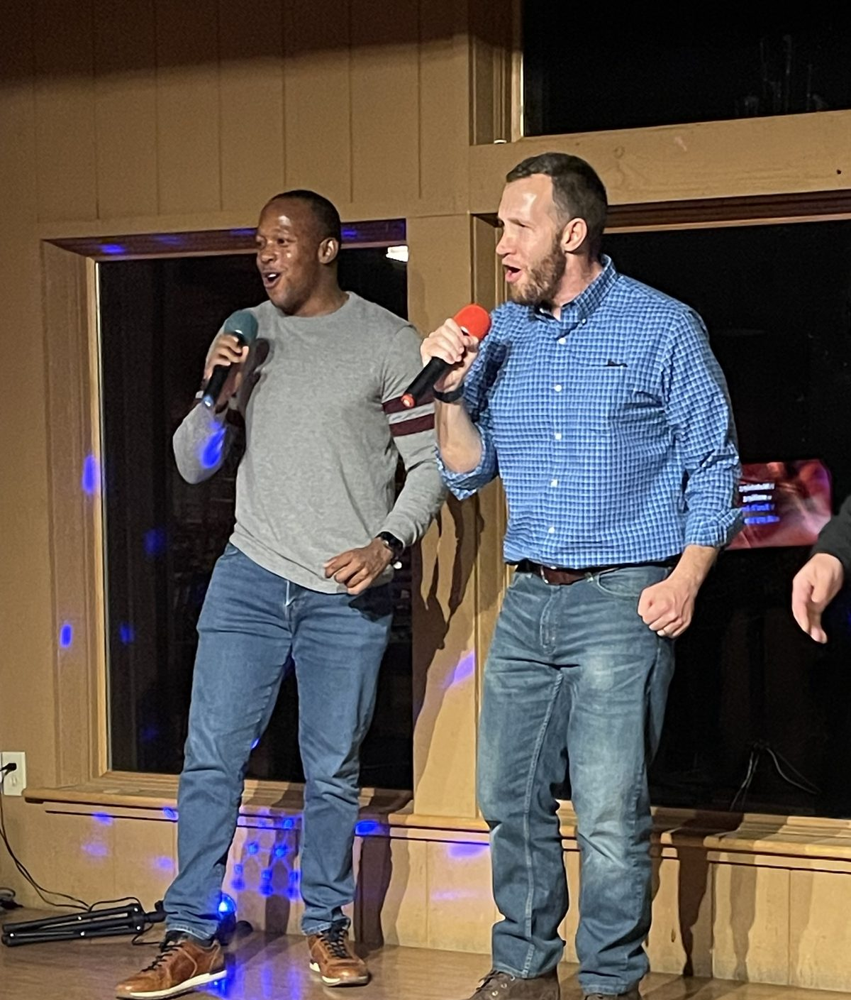
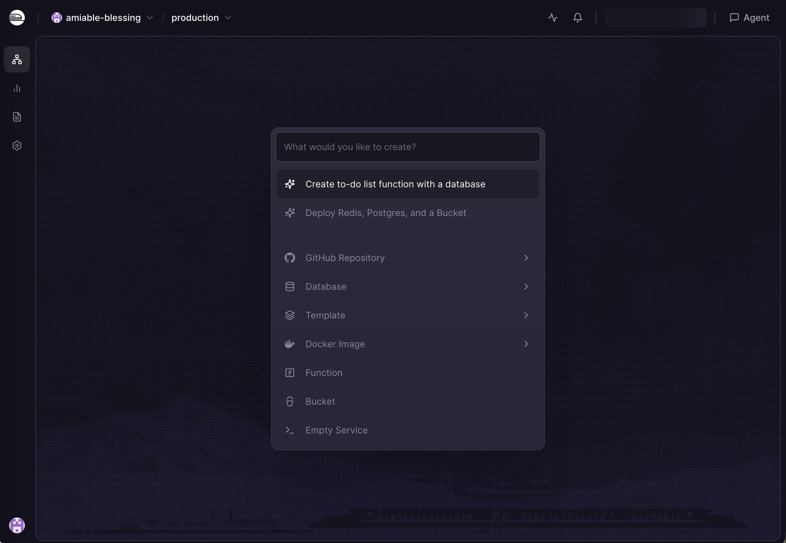
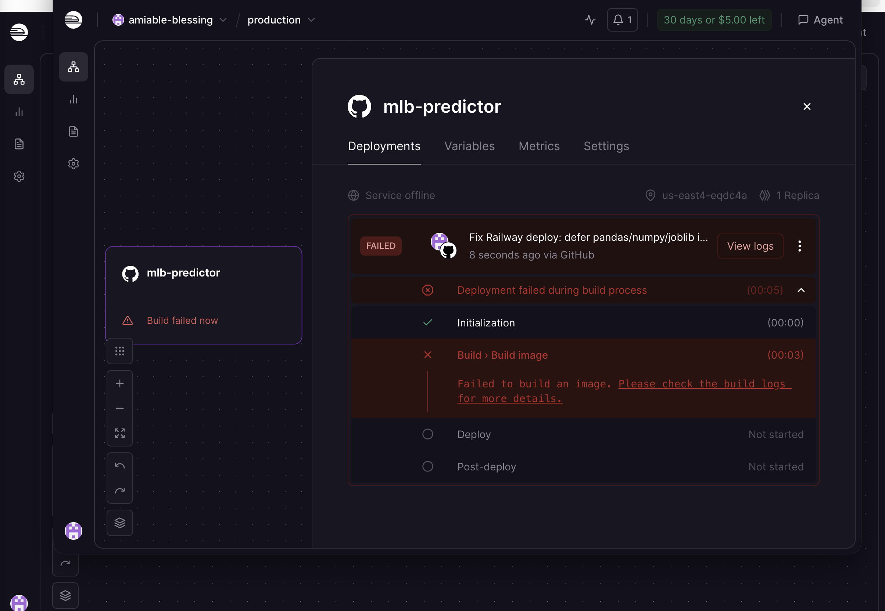
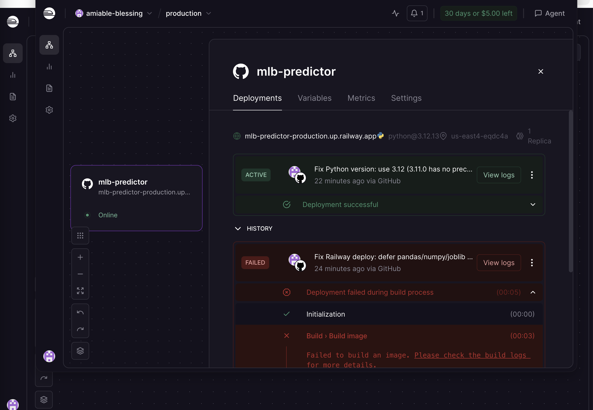
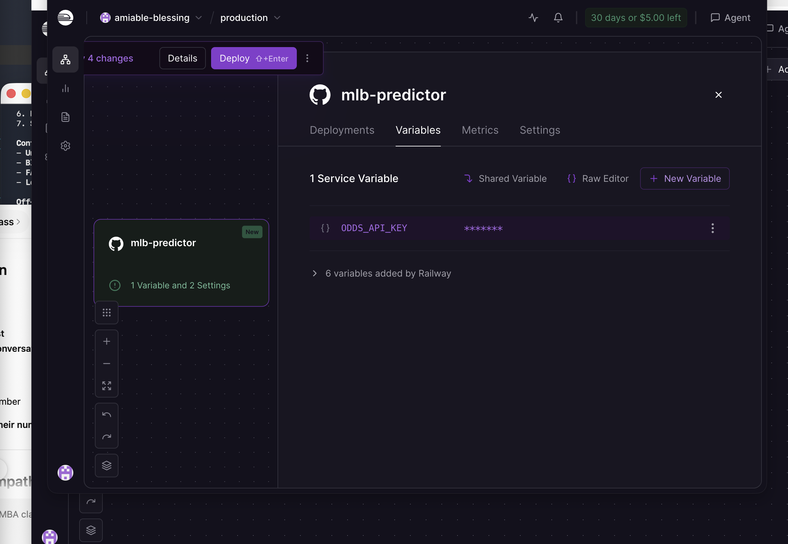

This post is about an AI and coding experiment. Uncle Robbie's Picks is a personal hobby project built for fun — it is not financial advice, not investment guidance, and has absolutely no connection to my professional practice at Edward Jones. Gambling and sports betting carry real financial risk. Please gamble responsibly and only with money you can afford to lose. This app is for entertainment purposes only.
It was a regular Saturday. The family was over. My brother-in-law Rob — "Uncle Robbie" to the kids — was watching baseball and, in the way that Uncle Robbies do, had an idea.
"You know what would be cool?" he said. "A thing that looks at the stats and tells you which prop bets are worth taking that day."
Now, I'm a financial advisor. Rob is not a software engineer. Neither of us has any business building a full-stack sports analytics application. But I've been experimenting with Claude Code for a while now — it's the AI tool I used to build this website, my mother's law firm website, and a Chamber year-in-review presentation. So I said: let's see how far we can get.

About 24 hours later, we had a live, publicly accessible web app running on a cloud server, pulling real MLB player stats, and surfacing daily prop bet picks with confidence ratings and real sportsbook odds from multiple books. It's called Uncle Robbie's Picks.
Here's what that actually looked like.
Uncle Robbie's Picks is a mobile-friendly web app that runs every day during the MLB season. It connects to the official MLB Stats API (free, public data) and analyzes pitcher and batter matchups across every game on the schedule. It surfaces the highest-confidence prop opportunities for that day — things like a strikeout total for a pitcher known to dominate high-strikeout lineups, or a total bases pick for a slugger facing a pitcher giving up extra-base hits.
For each pick, the app shows:
The prop types it covers: pitcher strikeouts, batter total bases, batter hits, batter RBIs, and NRFI (No Run First Inning). It also checks the injury report and flags picks where a player is on the IL.
I described what we wanted to Claude Code: a Python backend with FastAPI, a mobile-friendly dark-themed frontend, MLB Stats API integration, and odds data from The Odds API. Claude wrote essentially all of the code. I directed it — describing features, reviewing what it built, catching things that didn't look right — but I didn't write the code myself.
"Add a parlay builder so you can combine picks and see the combined implied odds."
Done.
"Pull live sportsbook odds and show which book has the best line for each pick."
Done.
"Flag any player on the injury report so we know to double-check before betting."
Done.
The conversation went back and forth for hours. Some things worked immediately. Others required debugging. At one point the entire frontend was loading a games screen instead of the props screen — a duplicate JavaScript function that Claude had written in two passes without catching the conflict. We tracked it down together.
Building the app locally was one thing. Getting it onto a public server was another. We used Railway, a cloud hosting platform that connects to a GitHub repository and deploys automatically when you push new code. The concept is simple. The execution, it turned out, involved some trial and error.

The first deployment failed because of Python version. Railway uses a tool called nixpacks to build Docker containers, and it couldn't find a precompiled binary for the specific version we'd specified (3.11.0 on Linux). Changed it to 3.12, still failed — this time because some background Python libraries (pandas, numpy) were being imported at startup even though they weren't needed at runtime. The old machine learning pipeline code — built back when this was going to be a full XGBoost model — was dragging in heavy dependencies just by being imported.

Claude caught the issue: move the heavy imports inside the functions that actually use them, so they only load if you call those functions explicitly. The web server never calls the training functions — it only needs the live data pipeline. Once that change was pushed, the build passed.

One more thing: the Odds API key. Railway lets you set environment variables that get injected into your app at runtime — sort of like a secret vault the app can read from. We set the API key there, but the code was reading it from a local file instead of the environment. One more fix, one more push.

The MLB Stats API is free — it's the official API that baseball data sites use, and it's completely open. The Odds API has a free tier with 500 requests per month, which is plenty for personal use. Railway gives you $5 in free credits to start. All in, we spent essentially nothing to build and deploy a live web application pulling real-time data from multiple APIs.
That's the part that still surprises me. The infrastructure that would have cost thousands of dollars and weeks of developer time a decade ago is now free or nearly free, and the coding that would have required a computer science degree can now be directed by someone who can articulate what they want.
A few things stood out over the 24 hours.
Articulation matters more than syntax. My job in this project was to describe what I wanted clearly — to think through the product, the edge cases, the user experience. Claude handled the implementation. The better I got at describing the goal, the better the output. That's a skill, and it's not the skill I expected to be developing.
Debugging is still real work. AI doesn't just produce perfect code. It produces pretty good code that sometimes has subtle bugs — a duplicate function here, a wrong import there. The debugging process is collaborative. You describe the symptom, the AI traces the cause, you verify the fix makes sense. It's faster than doing it alone, but it's not zero effort.
The gap between "working locally" and "deployed publicly" is real. The app worked perfectly on my MacBook. Getting it onto a server in a Docker container introduced three separate problems we hadn't seen locally. That gap used to be where a lot of projects died. Having an AI that understands infrastructure — Python environments, Docker builds, environment variables, cloud deployment — collapses that gap dramatically.
Uncle Robbie's idea was good. He gets credit for this one.
The app is live and free to use. It resets with fresh picks every day during the MLB season. You can install it as a PWA on your phone (in Chrome, tap the three-dot menu → Add to Home Screen) for an app-like experience.
Entertainment only. Uncle Robbie's Picks is a personal hobby project and AI experiment. It is not a financial product, investment tool, or professional sports betting service.
No connection to my professional practice. This app has no affiliation with Edward Jones, my financial advisory practice, or any professional services I provide. Nothing on this app constitutes financial advice.
Gambling carries real risk. Sports betting is legal in some states and illegal in others. If you bet, please do so responsibly, understand the odds are designed to favor the house, and never wager money you cannot afford to lose. If you or someone you know has a gambling problem, call 1-800-522-4700.
Model accuracy is not guaranteed. The statistical models are experimental. Past performance of any algorithm is no guarantee of future results.